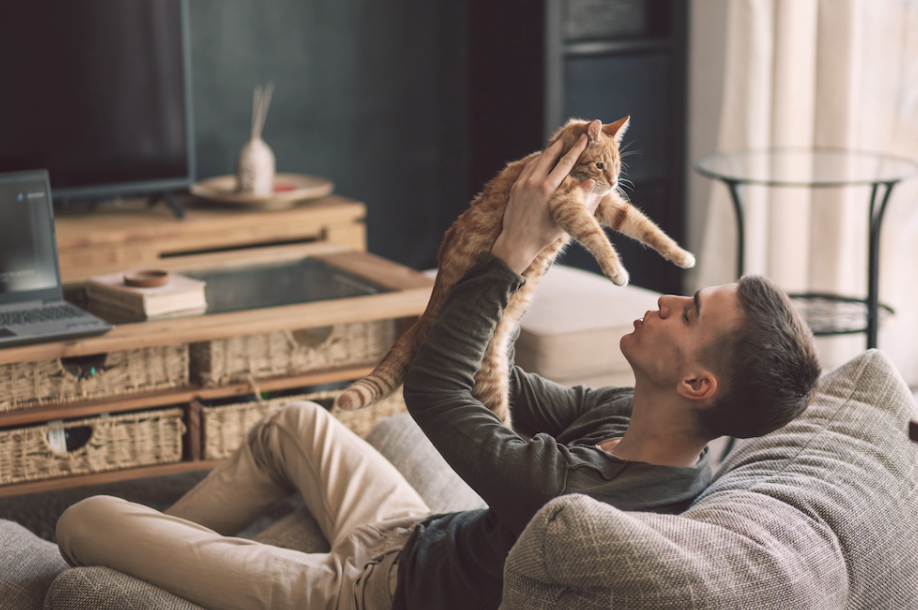

Decides que Mike debería acompañar al hombre.
Mike se le acerca al hombre, quien inicialmente intenta evitar al gato, pero se da por vencido eventualmente.
En las gradas del edificio, el hombre se sienta y acaricia a Mike, dándose cuenta de que es un gato callejero.
El hombre vive una vida solitaria y rutinaria, lo que le hace sentir un poco mejor al tener a Mike como compañía. De igual manera, Mike también disfruta de la compañía del hombre.
Después de un rato, el hombre invita a Mike a entrar a su apartamento. Mike acepta la invitación, tendiendo así un refugio para pasar la noche.
Después del transcurso de unos días, Mike se ha sentido más y más cómodo en el apartamento, y la vida del hombre ha mejorado considerablemente desde esa noche.
Fin.